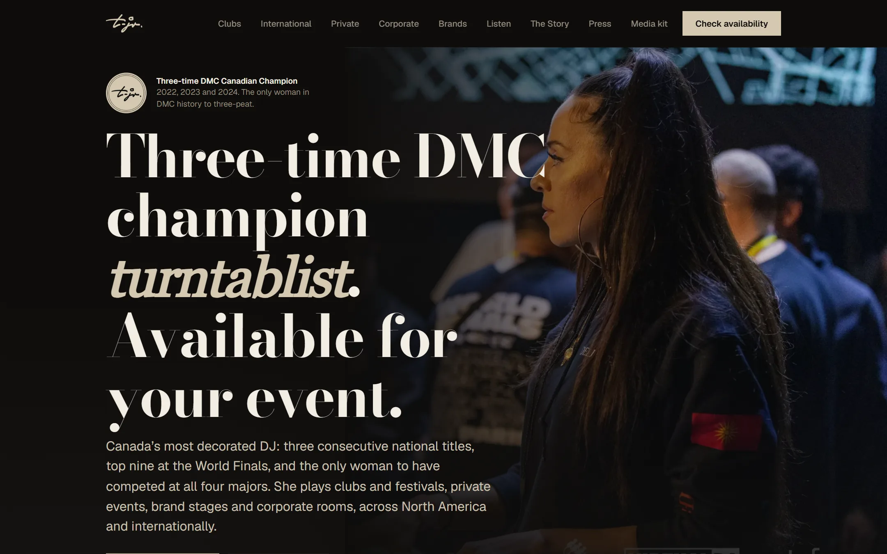
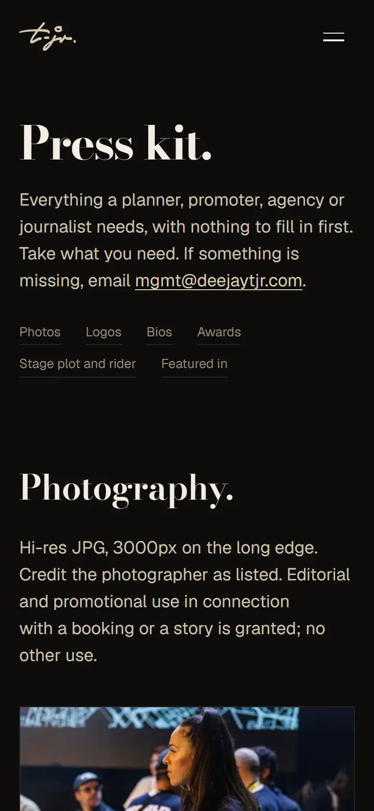
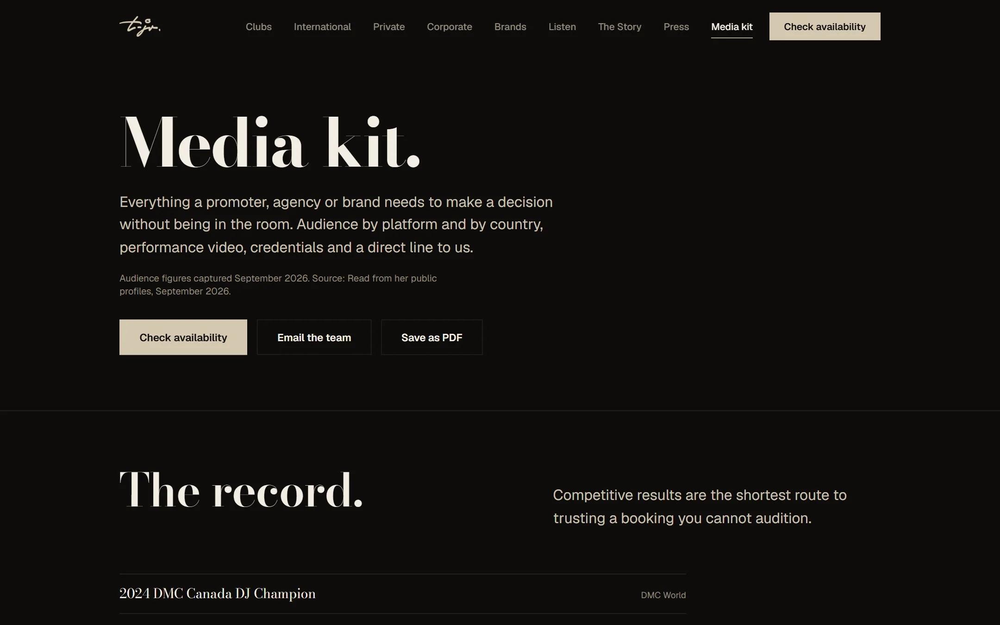

Her social audience is large, mostly outside Canada, and mostly fans. Fans don't book DJs. The brief named four people who do, and every page is written for one of them: a corporate event planner who needs a safe choice that still feels like a headline booking, a private host who wants something guests couldn't book anywhere else, a club or festival promoter who needs a name that sells tickets, and a brand or agency that wants reach and performance in one partner. The fan audience stays on the site, but as proof, not as the reader.
The positioning follows from that. She isn't a Toronto event DJ competing on directories where prices start in the double digits. She is a world-class turntablist you can hire for your event. Every page leads with the credentials, there is one call to action everywhere, “Check availability,” and the shop, mixes, and merch moved to the footer. A press kit at /press gives planners and journalists photos, logos, three lengths of bio, a stage plot, and a rider with nothing to fill in first, and a media kit gives promoters and brands dated audience figures by platform and country.

The brief specified gold on black, described as sampled from her signature. Her actual identity files said otherwise: her signature is sand on teal. So the site follows the files. Teal on a dark background measures 3.34:1, which fails accessibility contrast for text and reads green at large sizes, so it was retired from the interface and lives inside the logo, where it belongs. The page runs on a warm near-black with sand as the accent, used at full strength for a few full-width bands. The base had to stay dark because her photo library is stage-lit and dark, and the photographs need to sit in the page rather than on it. Every color pair's contrast ratio is recorded next to the design tokens.

The client asked for an interactive site, so it moves: sections reveal as you scroll, buttons pull gently toward the cursor, credential numbers count up, the hero photograph wipes open on load, and the homepage hero rotates through four photographs. All of it is about 3 KB of plain JavaScript with no animation library. Each effect sets a CSS variable or an attribute and lets the browser animate it, and reduced-motion settings turn every part of it off.
The details that made those numbers were mostly things that went wrong first. Inactive hero frames had to be fully transparent, not just clipped, or the browser counted the last stacked photo as the largest paint and the hero took 1,256 ms instead of 420 ms. Fonts use font-display: optional because with swap the vertically centered hero shifted on every load. The scroll reveal originally hid the hero's own call to action until the visitor scrolled, so the rule became that motion never decides whether content is visible. And video play buttons were dead on city pages, because the click handler lived in the grid component instead of the video tile.
Success was defined partly as ranking for searches like corporate DJ Toronto, and partly as having Google's AI Overviews and AI assistants describe her correctly. So the structured data is built from the same data files the pages render. Her awards, social profiles, and credentials live in one place, the list of profiles that tells search engines which accounts are hers is generated from the same list as the footer links, and each page's FAQ markup comes from the same array as the questions on screen, so the two can never drift apart. Every page emits one connected graph that references her by a single ID: her person record with her university, roles, and languages, plus events, videos with real upload dates, press articles, and venues tied to Wikidata. When Search Console flagged the event and video markup, the fixes went in the same week.
Her audience is international, so the site is too. Country and city pages cover the US, Brazil, and France, with the Brazilian Portuguese and French pages reviewed by native speakers before they went live and linked to their English versions for search engines. A Canada hub, a page for female DJ Toronto searches, a holiday parties page, and a Fairmont Royal York venue page cover her home market. Pages the brief planned but that would have been thin were listed as in progress rather than published, because a city page without genuinely unique copy does more harm than good. The old Squarespace addresses, from the clients page to the old EPK PDF, redirect to their new equivalents.

She and her team need to add awards, press, videos, and events without calling a developer. So the site has its own editor at /admin. Every form is generated from one field definition and validated on the server. Saves become commits to the site's repository through the GitHub API, checked against the file's current version so two people editing at once can't overwrite each other. Sign-in is a single password stored as a hash, with a signed 12-hour session cookie that scripts can't read, a same-origin check on every form post, a delay after a wrong password, and the editor kept out of search engines entirely. Content files are validated against a schema at build time, so a malformed entry fails the build instead of breaking the live site.
The old site told fans she was talented. The new one tells the people who book DJs that she is the safest headline choice they can make, then makes asking take one click. The design comes from her real identity files, the speed comes from treating every millisecond as a decision, and the search work is built so Google and AI assistants describe her from the same facts the page shows. She is also DMC Canada's branch manager, the organization behind the site in my DMC Canada '26 case study.
Visit the live site ↗